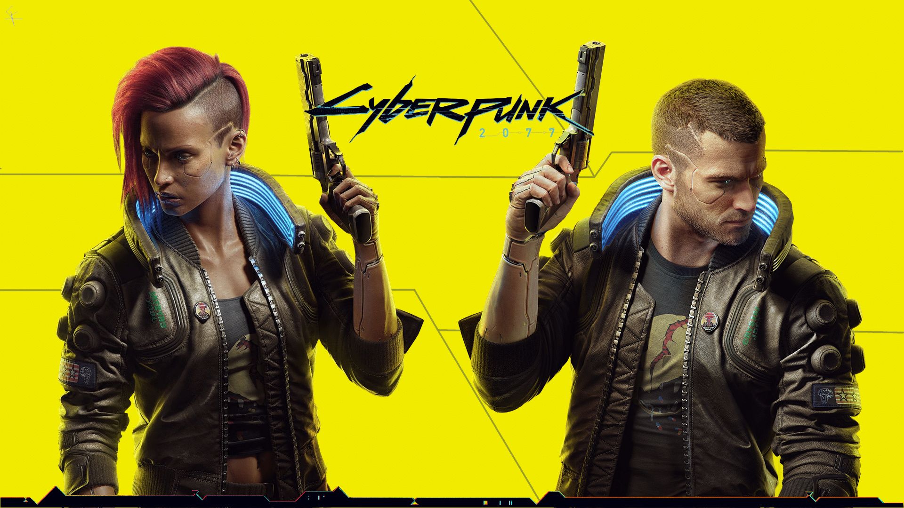

Cyberpunk is a subgenre of science fiction in a dystopian futuristic setting that tends to focus on a "combination of lowlife and high tech",featuring futuristic technological and scientific achievements, such as artificial intelligence and cybernetics, juxtaposed with societal collapse or decay. Much of cyberpunk is rooted in the New Wave science fiction movement of the 1960s and 1970s, when writers like Philip K. Dick, Michael Moorcock, Roger Zelazny, John Brunner, J. G. Ballard, Philip José Farmer and Harlan Ellison examined the impact of drug culture, technology, and the sexual revolution while avoiding the utopian tendencies of earlier science fiction.
Comics exploring cyberpunk themes began appearing as early as Judge Dredd, first published in 1977. Released in 1984, William Gibson's influential debut novel Neuromancer helped solidify cyberpunk as a genre, drawing influence from punk subculture and early hacker culture. Other influential cyberpunk writers included Bruce Sterling and Rudy Rucker. The Japanese cyberpunk subgenre began in 1982 with the debut of Katsuhiro Otomo's manga series Akira, with its 1988 anime film adaptation (also directed by Otomo) later popularizing the subgenre.
Early films in the genre include Ridley Scott's 1982 film Blade Runner, one of several of Philip K. Dick's works that have been adapted into films (in this case, Do Androids Dream of Electric Sheep?). The "first cyberpunk television series" was the TV series Max Headroom from 1987, playing in a futuristic dystopia ruled by an oligarchy of television networks, and where computer hacking played a central role in many story lines. The films Johnny Mnemonic (1995) and New Rose Hotel (1998),
both based upon short stories by William Gibson, flopped commercially and critically, while The Matrix trilogy (1999–2003) and Judge Dredd (1995) were some of the most successful cyberpunk films.

Grand Theft Auto V is a 2013 action-adventure game developed by Rockstar North and published by Rockstar Games. It is the seventh main entry in the Grand Theft Auto series, following 2008's Grand Theft Auto IV, and the fifteenth instalment overall. Set within the fictional state of San Andreas, based on Southern California, the single-player story follows three protagonists—retired bank robber Michael De Santa, street gangster Franklin Clinton, and drug dealer and gunrunner Trevor Philips—and their attempts to commit heists while under pressure from a corrupt government agency and powerful criminals. The open world design lets players freely roam San Andreas' open countryside and the fictional city of Los Santos, based on Los Angeles.
The game is played from either a third-person or first-person perspective, and its world is navigated on foot and by vehicle. Players control the three lead protagonists throughout single-player and switch among them, both during and outside missions. The story is centred on the heist sequences, and many missions involve shooting and driving gameplay. A "wanted" system governs the aggression of law enforcement response to players who commit crimes. Grand Theft Auto Online, the game's online multiplayer mode, lets up to 30 players engage in a variety of different cooperative and competitive game modes.